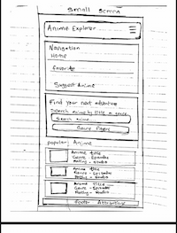
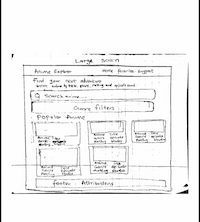

ANIME EXPLORER SITE PLAN
1. Site Overview & Name Reason
- Site Name:
- Anime Explorer
- Target Domain Idea:
animeexplorer.dev- Reason for Selection:
- The name "Anime Explorer" was selected because it immediately conveys the site's primary functionality—providing an intuitive, interactive gateway for fans to explore, filter, and discover anime titles across various genres without unnecessary navigation barriers.
- Purpose:
- Anime Explorer is an accessible, responsive web application designed to help users search, filter, and discover anime series. Powered by the Jikan REST API v4, users can browse top titles, view detailed modal overviews, submit recommendations, and persist favorite shows to local device storage.
2. Target Audience & User Scenarios
Primary Persona: Anime enthusiasts, casual viewers, and students looking for quick series recommendations, episode counts, genres, and community scores.
- Scenario 1: "I want to quickly filter and find popular Action anime to watch this weekend."
- Scenario 2: "I want to save my favorite shows so they remain bookmarked on my browser when I return."
- Scenario 3: "I want to suggest an underrated anime series that isn't listed in the current collection."
3. Color Palette & Application Rules
The visual design utilizes a high-contrast color palette tested against WebAIM AA accessibility contrast guidelines (minimum 4.5:1 ratio for standard text):
Deep Indigo
#1E1B4B
#1E1B4B
Coral Accent
#E05D00
#E05D00
Off-White BG
#F8FAFC
#F8FAFC
Near-Black Text
#0F172A
#0F172A
- Deep Indigo (#1E1B4B): Primary branding, header, footer background, primary buttons, and card title highlights.
- Coral Accent (#E05D00): Primary action CTA highlights, hover states, active navigation border indicators, and requirement labels. (Darkened slightly to pass WebAIM 4.5:1 contrast against white backgrounds).
- Off-White (#F8FAFC): Global page body background color and card wrap fill to maintain low eye strain.
- Near-Black (#0F172A): High-contrast primary body text color and dialog synopsis copy.
4. Typography
Headings: Bebas Neue (Display Font)
FIND YOUR NEXT ADVENTURE
Body Text: Nunito (400, 600, 700)
Anime Explorer provides clean, high-contrast readability across all responsive device screen sizes.
5. Navigation & Site Map
- index.html: Home page featuring hero title, genre pill filter buttons, live search input, and spotlight popular anime grid[cite: 3].
- browse.html: Full catalog collection view with combined genre select, sorting by score/episodes, and local storage favorites toggle checkbox[cite: 3, 4].
- recommend.html: Interactive anime recommendation form with required fields, title hints, and HTML validation[cite: 3, 4].
- thanks.html: Submission confirmation page that extracts and displays GET parameters safely with HTML entity escaping.
- attributions.html: Citations for the Jikan REST API v4, MyAnimeList database, and Google Fonts.
6. Wireframes
Hand-drawn wireframe sketches representing the home page layouts for mobile and desktop screens[cite: 3, 4]:
Mobile Screen Layout

Desktop / Large Screen Layout
